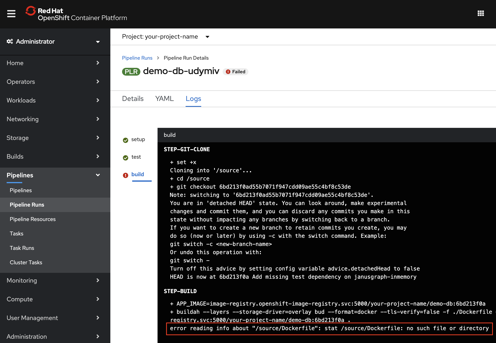

poly-repo
実際のアプリケーションの開発では、必要なデータにアクセスし、エンドユーザーに素晴らしい結果を提供するために、複数のツールやプロセスを統合する必要があることがよくあります。このチュートリアルでは、Cloud-Native Toolkit の Red Hat OpenShift パイプラインとタスクを使用して、オープンソースのデータベースを構築、テスト、コンテナ化、およびデプロイする方法を紹介します。最終的には、ベストプラクティスを実証し、人気のあるオープンソースツールとの統合を提供する、OpenShift 上で実行される CI/CD パイプラインが得られます。このパイプラインは、Red Hat OpenShift認証を受ける準備ができたイメージを生成します。
このチュートリアルは、他のチュートリアルで説明した概念を基にしています。
1.Cloud-Native Toolkit のインストール 1.Cloud-Native Toolkitのスターターキットを使用する 1.[既存のアプリケーションでクラウドネイティブツールキットを使う】(/learningpaths/build-images-cloud-native-toolkit/existing-application/)
よりシンプルなWebアプリを使ってCloud-Native Toolkitをうまく使いこなすためには、まず上記のチュートリアルに目を通すことをお勧めします。入門編とは異なり、このチュートリアルでは、Cloud-Native Toolkitのすぐに使えるパイプラインには簡単には適合しないアプリケーションに焦点を当てます。
このチュートリアルでは、JanusGraphのコピーとJanusGraphのDocker repoから始めます。このプロジェクトは、（スターターキットのような）シンプルなWebアプリの例のようには構成されていませんが、多くのオープンソースプロジェクトのように構成されています。
- このプロジェクトはpoly-repoで、ソースコードとDockerfileを別々のリポジトリで管理しています。
- このプロジェクトは複数のバージョンを管理しているため、ディレクトリとブランチの戦略はスターターキットの例のように単純ではありません。
- このプロジェクトは、通常のデフォルトポートとヘルスエンドポイントを持つウェブアプリではありません。
このケーススタディでは、以下の方法を説明します。
- タスクの変更
- パイプラインにパラメータを追加する
- パイプラインのパラメータをタスクに渡す
- ソースコードの静的解析の実行
- 複数のリポジトリとの連携
- OpenShift上で認証可能なイメージの構築とデプロイ
- イメージの脆弱性をスキャン
- ブランチでのセマンティックバージョニングの使用
最終的な目標は3つのことを達成することです。
1.Red Hat OpenShiftの認証に使用できるアプリケーションイメージを構築する。 1.オープンソースツールを使用して、OpenShift 上で CI/CD パイプラインを使用するベストプラクティスを実証する。 1.このケーススタディを、将来のプロジェクトに役立つ学習課題にする。
前提条件¶
このチュートリアルを完了するためには、まず以下の前提条件を満たす必要があります。
以下へのアクセスが必要です。
- GitHubアカウント
- Red Hat OpenShift クラスタ
また、以下のセットアップ作業を行う必要があります。
- Install the Cloud-Native Toolkit](/learningpaths/build-images-cloud-native-toolkit/install-toolkit)の記事で説明されているように、OpenShiftクラスターにCloud-Native Toolkitをインストールします。
- ドキュメント](https://cloudnativetoolkit.dev/learning/dev-setup/)に記載されている手順に従って、Cloud-Native Toolkit用のアカウントを準備します。これには以下が含まれます。
見積もり時間¶
このチュートリアルを完了するには、各パイプラインの実行が完了するのを待たずにすべてのステップを実行した場合、約90分かかると思われます。
ほとんどのステップでは、問題を説明し、その問題を解決する方法を説明し、解決後の結果を示しています。自分のパイプラインがさらに進み、すべての修正を確認することができれば、より満足感が得られますが、先に進めておかないと完了までに何時間もかかってしまいます。時間を節約するために、自分のパイプラインを自分の都合の良いように走らせながらも、先を読み、何度も修正を加え、提供されたスクリーンショットを頼りに、待たなければならなかったエラーを確認することをお勧めします。(Note: 以下の例では、いくつかの実行がスキップされています。)
ステップ¶
1.ソースレポをフォークする 2.Cloud-Native Toolkitを使用するプロジェクトを準備する 3.ツールキットを使ってパイプラインを作成する 4.パイプラインをOpenShiftのウェブコンソールで見る 5.テストタスクを修正する 6.SonarQubeのJavaビンパスの修正 7.Working with a separate repo for Dockerfiles 8.Helmチャートを使った作業 9.ヘルスタスクのカスタマイズ 10.ソースコードにセマンティックバージョニングのタグを付ける 11.タグを使ったビルドとラベル付け 12.イメージスキャンの結果を確認する 13.Artifactoryへのヘルムリリース 14.結果を調べる
Step 1.ソースリポジトリをフォークする¶
今回の例では、オープンソースのグラフデータベースであるJanusGraphをベースにしています。フォークが急増して JanusGraph コミュニティを混乱させたくなかったので (そしておそらく偶発的な PR の乱発も)、彼らのリポジトリを自分たちのスナップショット リポジトリにミラーリングすることにしました。これらのリポジトリから、変更、ブランチ、タグ、リリースを行うことができる自分のリポジトリを作成します。
1.https://github.com/IBM/demo-db にアクセスします。 1.Fork**」ボタンをクリックします。 1.レポの作成が許可されているアカウントまたは組織を選択します。

フォークでは、いくつかの点に注意してください。
- フォークの URL は
https://github.com/<your-user>/demo-dbのようになります。<your-user>は選択したユーザーまたは組織です。これが、以下で使用するソースレポのURLになります。 - レポには多くのブランチが含まれています。このチュートリアルでは、
v0.5という名前のブランチに注目します。 -
レポには多くのタグがあります。このチュートリアルでは、セマンティックバージョニングを使って、
v0.5ブランチに新しいタグを自動的に作成します。タグ**ボタンをクリックすると、どのバージョンから始めているかがわかります。
OpenShift用のDockerfileの修正
を行いました。。
私たちはすでに[Dockerfile-rhos](https://github.com/IBM/demo-db-docker/blob/master/0.5/Dockerfile-rhos)と[docker-entrypoint-rhos.sh](https://github.com/IBM/demo-db-docker/blob/master/0.5/docker-entrypoint-rhos.sh)を提供していますが、これらはjanusgraph-docker repoにあるオリジナルのDockerfileとdocker-entrypoint.shを修正したものです。私たちのリポジトリをそのまま使用することができるはずですが、これは認証を通過できるイメージを作成するための重要な部分なので、私たちが行った変更を確認してみましょう。
Dockerfileを修正する際には、以下の2つの目標を念頭に置いてください。
- この[記事](https://developer.ibm.com/learningpaths/universal-application-image/design-universal-image/)で説明されているように、Universal Application Image (UAI)を作成するためのベスト・プラクティスを使用する。
- Red Hat Container 認証要件に準拠したイメージを構築する。
Universal Base Image (UBI)
これを実現するために、まず、[Red Hat Container Catalog](https://catalog.redhat.com/software/containers/explore/)から利用可能なオプションを検索して、どのUBIから構築するかを決定しました。 今回は、OpenShiftとKubernetesの両方で動作するUBIを構築します。
私たちは Java アプリを構築しているので、OpenJDK UBI を探しました。openjdk`で検索すると、OpenJDK 1.8とOpenJDK 11のUBIイメージが見つかりました： Javaアプリを構築するので、OpenJDKのUBIを探しました。
タイルをクリックしてリリース情報を表示しました。
。
 。
。
。
私たちは、リリース情報を得るためにタイルをクリックしました：
。
。
前: `FROM openjdk:8-jre-slim-buster`
。後。FROM registry.access.redhat.com/ubi8/openjdk-11:1.3-15`
。この`FROM`行の後に、`USER root`を追加する必要があります。この行がないと、その後に続く `chmod` コマンドのいくつかが失敗してしまいます。ただし、コンテナをrootで実行することはありません。パーミッションを設定した後、`USER janusgraph`コマンドを使用します。
コンテナがOpenShift上で動作する際には、プロジェクトに応じて異なるユーザーIDが割り当てられます。このユーザーはrootグループのメンバーになります。以前から想定されていたJanusGraphのユーザーとグループではなく、rootグループでこのユーザーにアクセスできるように、いくつかの修正が加えられています。データベースの実行には特別なユーザーは必要なく、調整が必要なのはファイルのパーミッションの設定だけでした。
Dockerfile-rhosとdocker-entrypoint-rhos.shという名前を使ったのは、オリジナルのバージョンがまだ利用できるようにするためです。これらのファイルを比較することで、すべての変更点を確認することができます。
Step 2.Cloud-Native Toolkitを使用するためのプロジェクトの準備¶
ターミナルでocというCLIを使って、プロジェクトを準備します。
# OpenShiftコンソールで提供されるCLIログインを使う
oc ログイン <your-info>
# 新しいOpenShiftプロジェクトを作成して切り替える
oc new-project <your-project>
# プロジェクトを同期してツールキットでの使用に備える
oc sync <your-project>
_Note: すべてのツールキットのアセットは、OpenShift の tools プロジェクトに格納されています。sync`コマンドは、これらのアセットをあなたのプロジェクトで利用できるようにします。
Step 3.ツールキットを使ってパイプラインを作る¶
作成したプロジェクトを使用して、リポジトリからTektonのパイプラインを作成します。oc pipeline`コマンドを実行すると、通常はオプションの入力を求められます。また、あなたのレポ（カレントディレクトリ内）に基づいて、いくつかのオプションを自動的に決定します。この例では、必要なオプションがすでにわかっているので、コマンドラインでリモートのレポ、ブランチ、オプションを指定することができます。
以下の引数を指定して、oc pipelineコマンドを使用します。
| オプション | 説明 |
|---|---|
| gitUrl#branch-name | パイプラインに登録するリポジトリのGit URLを提供します。ブランチは、#{branch-name}を付加することで追加できます。 省略した場合は、GitのURLとブランチはカレントディレクトリから読み込まれます。 |
| --tekton｜（Jenkins の代わりに）Tekton パイプラインを作成します。 | |
| --pipeline ibm-java-maven | Maven パイプラインを使用します。 |
-p scan-image=true｜scan-imageパラメータをtrueに設定します。 |
ターミナルで以下のコマンドを実行し、パイプラインを作成・実行します。<your-user>は実際のユーザーや組織に置き換えてください。なお、ここではv0.5ブランチで作業しています。
``txt
oc pipeline https://github.com/
プロンプトが表示されたら、GitHubのユーザー名と、先ほど作成したパーソナルアクセストークンを入力します。
出力は以下のようになります。

_**Warning:** これは非常に長く実行されるパイプラインを作成するため、失敗すると思われます。そのため、終了するのを待つのではなく、パイプラインを停止して修正するための手順を先に読んでください。
## Step 4.OpenShiftのWebコンソールでパイプラインを監視する
oc pipeline」の出力の最後にある「View PipelineRun」のリンクをクリックします。 これにより、OpenShift ウェブコンソールのプロジェクトで実行されたパイプラインが表示されます。

各タスクが何をしているのか、簡単に説明します。
| **Task** | **Description** |
|--------------|-----------------|
| **setup** | レポの指定されたブランチをクローンし、パイプラインの残りのタスクで使用されるパラメータを設定します。|
| **test**｜アプリをビルドしてから統合テストを実行します。| **test**｜SonarQube を使用してコード カバレッジ テストと品質テストを実行します。|
| **build**｜Dockerイメージをビルドし、OpenShiftのイメージレジストリにプッシュします。|
| **deploy**｜提供されたHelmチャートを使用して、検証用のCI環境にアプリケーションをデプロイします。|
| **health**｜コンテナの`health`エンドポイントを呼び出して、デプロイが稼働していることを確認します。|
| **tag-release**｜Gitレポのリリースに新しい固有のバージョン番号をタグ付けします。|
| **img-release**｜イメージリリースにタグを付けて、コンテナレジストリにプッシュします。|
| **img-scan**｜イメージのスキャンを実行します。|
| **helm-release**｜Helmチャートのファイル名の一部としてイメージタグを使用します。| **helm-release** | イメージタグを Helm チャートのファイル名の一部として使用します。|
| **gitops**｜Helmチャートの構成を提供されたGitOpsリポジトリに公開して、下流のデプロイメントをトリガします。|
## Step 5.test**タスクを修正します。

Pipeline Run Details`のグラフから、`test`タスクにエラーが発生していることがわかります。タスクをクリックすると、そのタスクのログが表示されます。
_**Note:** パイプライン実行に時間がかかりすぎている場合は、**Actions**ドロップダウンを使用して実行を停止することができます。失敗することを想定しているので、場合によっては長い時間がかかることもあります。

ibm-java-maven**パイプラインでは、**ibm-java-maven-test-v2-5-0 (test)**タスクを使用してソースコードのリポジトリをクローンし、Mavenを使用してコードをビルド（パッケージ化）してからテストを行います。これらのステップが成功すると、SonarQubeのSonarScannerを実行してコードの静的解析を行います。
今回の事例では、この環境ではデフォルトでMavenのテストが成功しません。このステップを*プロジェクト固有のMavenの詳細にあまり触れずに*乗り切るためには、テストタスクに以下のようなカスタマイズを行います。
1.Mavenのコマンドラインゴールとオプションのパラメータを追加するようにタスクを変更する。
1.1. パイプラインを変更して、テストタスクに渡す新しいパラメータを追加する。
これにより、以下のことが可能になります。
* ゴールを "クリーンパッケージ "で実行する
* コアプロジェクトのみをテスト
* このMavenプロジェクトのRelease Audit Tool (RAT)部分をスキップする
* 過剰な進捗状況のロギングを抑制する
* 一部のテストが失敗しても次のステップに進む
* パイプラインの開始時にこれらの設定をカスタマイズする
これらの変更点の中にはプロジェクト固有のものもありますが、ツールキットで提供されているパイプラインやタスクを、プロジェクトの好みに合わせてどのように変更できるかを示す一般的な良い例です。
### パイプラインのテストタスクの編集
ここまでは「パイプラインの実行」のみを見てきました。特定のパイプラインの特定のランを見るために、`oc pipeline`出力で提供されるリンクを使ったことを思い出してください。ここでは、パイプラインランの出力や詳細を見るだけでなく、*Stop Run*、*Rerun*、*Delete Pipeline Run*などのアクションが利用できます。
実際のパイプラインやタスクを変更するには、`Pipeline Runs`から`Pipelines`に移動します。
1.パイプラインに移動します。
* パイプライン実行からパイプラインに移動する簡単な方法は、**パイプライン実行の詳細**の下に表示される`Pipeline`リンクを見つけてクリックすることです。

* 別の方法として、以下のようにサイドバーからパイプラインに移動することもできます。
* **Administrator**パースペクティブを使用します。
* 左側のサイドバーで **Pipelines** を展開します。
* **Pipelines** をクリックします。
* **Project** ドロップダウンに自分のプロジェクトが表示されていることを確認します。
* パイプラインをクリックします（ツールキットでは、パイプライン名にお客様のリポジトリ名を使用します）。
1.1. `test` タスクに移動します。
* パイプラインの詳細の下に、タスクがタスクリソースへのリンクとともに表示されます。
* **ibm-java-maven-test-v2-5-0 (test)** タスクを選択します。

1.タスクのYAMLを編集します。
_**Note:** タスクのコピーを編集するのは、**自分のプロジェクト**だけで、**tools`プロジェクトのオリジナルバージョン（他のプロジェクトと共有されます）は編集しないようにしてください。
* **YAML** タブをクリックします。
* 以下のYAMLをコピーして、spec/paramsの下に追加し、新しい`GOALS`パラメータを作成します。
``yaml
- デフォルト: パッケージ
説明: Maven のゴールとオプション
名前: GOALS
タイプ: 文字列
```
* 以下のスクリーンショットは、（最初のパラメータにした場合）どのように見えるかを示しています。

* **Save** ボタンをクリックして、編集内容を保存します。
* 以下のYAMLをコピーして、spec/stepsの下に追加してください。 *ビルドステップとテストステップを、`GOALS`パラメータを使用してMavenを実行する単一のテストステップ*に置き換えてください。
``bash
if [ -f "./mvnw" ]; then
./mvnw $(params.GOALS)
また
mvn $(params.GOALS)
fi
```
* 以下のBefore/Afterのスクリーンショットを参照してください。2ステップを1ステップに置き換えていることを確認してください。
**変更前

**後**!

* **Save** ボタンを再度クリックして、編集内容を保存します。
_**Note:** Mavenのライフサイクルでは、`package`には`test`が含まれています。冗長なステップを削除していますが、ここでの主な目的は、好きなMavenの目標やオプションを渡せるようにすることです。
1.1. パイプラインに `maven-goals` パラメータを追加します。
1. パイプラインに `maven-goals` パラメータを追加する * `test` タスクに Maven ゴール用のパラメータが追加されたので、オプションを渡せるようにパイプラインのパラメータを追加する必要があります。
* **パイプラインの詳細**ページに戻ります。パイプラインの詳細**ページに戻り、**パラメータ**タブを選択します。
* **+Add Pipeline Parameter** をクリックします。
* 「Name」、「Description」、「Default Value」（詳細は後述）を以下のように入力します。
* **名前**:名前**: `maven-test-goals` (テストゴール)
* **Description**:Mavenテストタスクの目標とオプション
* **デフォルト値**:`clean package --no-transfer-progress -Drat.skip=true -pl=janusgraph-driver,janusgraph-core,janusgraph-test,janusgraph-backend-testutils,janusgraph-inmemory`
* ページ下部の **Save** をクリックしてください。

_**Tip:** 既存のデフォルト値のいくつかは良いデフォルトのように見えますが、パイプラインを開始するたびに、`git-url`と`git-revision`をあなた自身のURLとv0.5に置き換えることになることに注意してください。ですから、ここにいる間は、これらの値をデフォルトにしておいた方がいいでしょう。
1.1. パイプラインのパラメータをタスクのパラメータに割り当てます。
* パイプラインの **詳細** タブに移動します。
* **Actions** ドロップダウンを使用して、**Edit pipeline**を選択します。
* **YAMLの編集**をクリックします。
* 以下のYAMLをコピーして、`test`タスクパラメータのspec/tasksの下に追加します。
``yaml
- 名前: 目標
値: $(params.maven-test-goals)
```

* ページの下部にある **Save** を選択します。
1.パイプラインを開始します。
* **Actions** ドロップダウンで **Start** を選択します。
* **git-url** を入力します (例えば、ソースコードのリポジトリには `https://github.com/<your-user>/demo-db` と入力します)。
* **git-revision** を `v0.5` (我々のGitブランチ)に設定します。
* **scan-image** と **maven-test-goals** はデフォルトのままにします。
* **Start** を選択します。

_**Note:** パイプラインはまだ時間がかかったり、失敗することがあるので、実行中は先を読んだ方がいいでしょう。
1.私たちのプロジェクトのMavenデフォルトゴールを詳しく見てみましょう。
パイプラインの実行中に、デフォルトの目標を見てみましょう。非常に特殊な選択をしていることにお気づきでしょうか。一般的には、これは良い「デフォルト値」ではないかもしれませんが、このプロジェクトのためだけにこのパイプラインに取り組んでいる間は、この特定のデフォルトは便利です。もっと良いデフォルトは、Mavenの好みにもよりますが、"package "や "clean verify "ではないでしょうか。
ここでは、テストを最適化して合格させるために使用できるものについて説明します。
* `clean package` は、Maven の言い方です。* `clean package` は Maven の言い方で、"クリーンに開始し、すべてのビルドとテストを行うが、インストールとデプロイの前に停止する。" です。
* `--no-transfer-progress` は、ログ出力を非常に長くしてしまう進捗状況のロギングをオフにします。進行状況の表示は、コマンドラインで実行しているときにはいいのですが、ログをスクロールしなければならないときにはあまりいいものではありません。
* `-Drat.skip=true` -- Apache RAT のテストがいくつかのブランチで問題を起こしたので、POM ファイルが理解できるこの便利なオプションを使って、今のところこれを無効にしています。
* `-pl=<project-list>` は、プロジェクトをフィルタリングします。このオプションはPOMファイルが理解できるようになっています。
さらにいくつかのオプションを追加します。
* `--fail-never` はデモ目的で、いくつかのテストが失敗しても続行したい場合に適しています。
* `-DskipTests` は、デモのために本当にスピードアップしたい場合に使用できます。
理想的には、デフォルトで、あるいは `rat.skip` フラグのようなフラグを使って、失敗したテストや動作が遅すぎるテストをすべてスキップすることができます。これを実現するには、Maven とプロジェクト固有の判断が必要になるので、ここではそれを避けて、合理化されたパイプラインを進めることにします。
1.期待される結果を調べます。
* テストログの先頭、`STEP-TEST`の直後には、自分の変更が実際に使用されたことを確認するための`mvn`コマンドが表示されているはずです（`mvn <maven-test-goals>`として）。テストタスクのログを調べると、テストステップの最後（`STEP-SONAR-SCAN`の直前）にユニットテストの結果が表示されているはずです。何百ものテストを実行したのに、`-pl`リストのプロジェクトでしか実行されていないことがわかるはずです。

* テストステップが失敗した場合は、`--fail-never` フラグ (および/または `-SkipTests`) を使用して、`test` ステップを通過し、`sonar-scan` ステップを開始してみてください (まだ `test` タスク内です)。
1.次のエラーに進みます。
上記の修正により、`test` タスクの `git-clone` ステップと `test` ステップは正常に終了するはずですが、`sonar-scan` ステップ (`test` タスクの最終ステップ) は失敗します。
時間を節約するために、先を読んで、すでに遭遇している次の問題を修正することができます。エラーの結果を見たい場合は、現在の**pipeline run**を継続させ、リソースを節約したい場合は停止させてください。
## Step 6.SonarQubeのJava binのパスを修正する

Javaコードがテストされ、Mavenゴールを使ってコンパイルされた後、ツールキットが提供するパイプラインでは、SonarQubeを使ってコードの静的解析を行います。提供されているタスクは、単一の `target` ディレクトリを探します。各サブディレクトリの `target` ディレクトリを探すように変更する必要があります (つまり、`*/target`)。
ユニットテストを通過した後のオリジナルのエラーは次のようなものでした。
``txt
ERROR: sonar.java.binariesの値が無効です。
INFO:------------------------------------------------------------------------
INFO:実行の失敗
INFO:------------------------------------------------------------------------
INFO:トータル タイム: 21.925s
INFO:最終メモリ: 17M/201M
INFO:------------------------------------------------------------------------
ERROR: SonarScanner実行中のエラー
java.lang.IllegalStateException:ターゲット "に一致するファイルやディレクトリがありません
testタスクには、必要なパラメータがすでに含まれています。$(params.sonarqube-java-bin-path).これはタスクの中で使われていますが、パイプラインのパラメータではありません。上で行ったように、再度パイプラインにパラメータを追加して、パラメータの値をタスクに渡すことができます。そうではなく、今回はタスクのデフォルトを変更するだけで、よりシンプルに修正する方法を紹介します。
1.再度、testタスクに移動します。
* 「Pipeline details」の下に、タスクがタスクリソースへのリンクとともに表示されます。
* `ibm-java-maven-test-v2-5-0 (test)` タスクをクリックします。
1.タスクのYAMLを編集します。
* **YAML** タブをクリックします。
* `sonarqube-java-bin-path` のデフォルトを `'*/target'` に変更します。

1.最後の実行を開始します。
新しいパイプラインのパラメータを追加していないので、最後のパイプラインの実行を再実行すればいいのです。
* 最後のパイプラインランに移動します。
* **Actions** ドロップダウンを使用して **Rerun** を選択します。

1.次のエラーに進みます。
今度は `test` タスクが成功することを期待します。次は `build` タスクが失敗するので、次のセクションでそれを見ます。時間を節約するために、先に読んで、すでに遭遇した次の問題を修正することができます。現在の**パイプラインの実行**を継続させ、`test`タスクが完了した後にSonarQubeの静的解析結果を調べることができます--[Step 14. Explore the results](#step-14-explore-the-results)に示すように。
Step 7.Dockerfile用の別リポジトリでの作業¶

Pipeline Run Detailsから、buildタスクが失敗していることがわかります。
エラーインジケータが表示されたら、Pipeline Run Detailsの下に表示されているグラフでbuildタスクをクリックします。これにより、Logsタブに直接移動し、buildタスクが選択されます。

Dockerfileが見つからないため、ビルドが失敗します。この場合、/sourceディレクトリは、ビルドタスクがレポをクローンする場所です。Dockerfileは、レポのルートにあることが期待されます。
多くの実世界のアプリケーションでよく見られるように、JanusGraphプロジェクトはポリレポです。上でビルドしてテストしたソースコードは1つのレポにありますが、Dockerfileは別のレポにあります。複数のバージョンを管理しているアプリケーション(全部？)では、Dockerfilesをサブディレクトリに置くこともよくあります。
poly-repoプロジェクトでよくあるバリエーションを許容するために、以下を許容するようにパイプラインを変更する必要があります。
- Git URL for the Dockerfiles repo is different from the source code repo.
- build context (Dockerfileを含むディレクトリ)は、レポのルートディレクトリではありません。
- Dockerfile の名前が異なる（例えば、「Dockerfile-rhos」）。
この問題に対処するには、追加のパラメータを許可するようにパイプラインを修正し、各タスクのパラメータに渡すパイプラインのパラメータを指定します。
ibm-java-mavenパイプラインでは、ibm-build-tag-push-v2-5-0 (build)タスクを使用して、buildahを使用したコンテナイメージをDockerfileでビルド、タグ付け、プッシュします。ibm-build-tag-push-v2-5-0 (build)タスクのYAMLを見てみると、上記の3つ（git-url、CONTEXT、DOCKERFILE）に必要なパラメータがすでに用意されていることがわかります。
4つ目のパラメータの変更は、もっと目立たないものです。パイプラインでは、git-revisionというパラメータを使用します。私たちのソースレポでは、これはブランチ名の v0.5 でした。setup` タスクは git-revision を受け取り、それをハッシュ ID に変換します。ソースレポのハッシュ ID は他のレポでは使えないので (たとえブランチ名が同じであっても)、レポごとに異なる git-revision を設定する必要があります。
1.パイプラインに3つのパラメータを追加します。
* **パイプラインの詳細**ページに戻り、**パラメータ**タブを選択します。
* 各パラメータの「**+ パイプラインパラメータの追加」をクリックします。
* **Name**, **Description**, **Default Value** を以下のように入力します。
* **Parameter 1**.
* **名前**:dockerfile-git-url`。
* **Description**:Dockerfileを含むGitリポジトリのURLです。
* **デフォルト値**: https://github.com/IBM/demo-db-docker
* **パラメータ2**.
* **名前**:dockerfile-context-path` (ドッカーファイルのコンテキストパス)
* **Description**:ビルドコンテキストのディレクトリ
* **デフォルト値**:0.5
* **パラメータ 3**.
* **名前**:`dockerfile-file-name` (ドッカーファイルのファイル名)
* **Description**:使用するDockerfileのファイル名です。
* **デフォルト値**:Dockerfile-rhos
* ページ下部の **Save** をクリックします。

1.パイプラインのパラメータをタスクのパラメータに割り当てます。
* パイプラインの**Details**タブに移動します。
* **Actions** ドロップダウンを使用し、**Edit pipeline**を選択します。
* **Edit YAML**をクリックします。
* 以下のYAMLをコピーして、`build`タスクのパラメータのspec/tasksの下に追加します。
``yaml
- 名前: CONTEXT
値: $(params.dockerfile-context-path)
- 名前: DOCKERFILE
値: $(params.dockerfile-file-name)
```
* 同じセクションで、`build`タスクのパラムの既存の値を編集して、`git-url`と`git-revision`を以下のように変更します。
``yaml
- 名前: git-url
値: $(params.dockerfile-git-url)
- 名前: git-revision
値: メイン
```
* ページ下部の **Save** をクリックしてください。

_**Note:** ソースリポジトリとDockerリポジトリで同じブランチ名を使用している場合は、`$(params.git-revision)`を渡して、ハッシュIDの代わりにブランチ名を使用することができますが（必要であれば、さらに別のパイプラインパラメータを追加することもできます）、この場合、Dockerfilesのリポジトリはすべてのバージョンで`main`ブランチを使用するので、設定しても忘れてしまいます。
1.パイプラインを開始します。
* **Actions** ドロップダウンを使用し、**Start**を選択します。
* _your_ **git-url** を提供します（例えば、ソースコードのレポは `https://github.com/<your-user>/demo-db` です）。
* **git-revision** を `v0.5` (我々のGitブランチ)に設定します。
* **scan-image** と **maven-test-goals** はデフォルトのままにします。
* **dockerfile-git-url** を `https://github.com/IBM/demo-db-docker` に設定します (私たちの _repo を使用できます)。
* **dockerfile-context-path** を `0.5` (我々のリリースディレクトリ)に設定してください。
* **dockerfile-file-name** を `Dockerfile-rhos` に設定します。
* **Start** をクリックします。

1.次のエラーに移ります。
今回は、`build`タスクが成功することが期待できます。次は `deploy` タスクが失敗するので、次のセクションで見ていきます。時間を節約するために、先に読んで、すでに遭遇した次の問題を修正することができます。現在の `pipeline run` を継続させて、`build` タスクが完了した後に結果を確認できるようにします。
1.1. build の結果を見る。
タスクが完了すると、[Step 14. Explore results](#step-14-explore-the-results)にあるように、ビルドしたイメージがイメージレジストリに表示されます。
Step 8.Helmチャートでの作業¶
Pipeline Run Detailsから、deployタスクが失敗していることがわかります。
エラーインジケータが表示されたら、Pipeline Run Detailsの下に表示されているグラフの中のdeployタスクをクリックしてください。これにより、Logsタブに直接移動し、deployタスクを選択することができます。

Helmのチャートが見つからないため、デプロイが失敗します。プロジェクトでは、Helmチャートを別のリポジトリに保管するのが一般的で、しばしば他のプロジェクトと一緒になっています。今のところ、HelmチャートはDockerfilesと同じリポジトリに置くべきですが、パイプラインにパラメータを追加して柔軟に対応できるようにする予定です。
1.パイプラインにパラメータを追加する。
* **Pipeline Details**ページに戻り、**Parameters**タブを選択します。
* 各パラメータの **+ パイプラインパラメータの追加** をクリックします。
* **Name**, **Description**, **Default Value** を以下のように入力します。
* **Parameter 1**.
* **名前**:名前**: `chart-git-url`
* **Description**:Helmチャートを含むGitリポジトリのURLです。
* **デフォルト値**: https://github.com/IBM/demo-db-docker
* **Parameter 2**.
* **名前**:名前**: `chart-root` (チャートルート)
* **Description**:チャートのルートディレクトリ
* **デフォルト値**: chart
* ページ下部の **Save** をクリックしてください。

1.パイプラインのパラメータをタスクのパラメータに割り当てます。
* パイプラインの **Details** タブに移動します。
* **Actions** ドロップダウンを使用して、**Edit pipeline**を選択します。
* **YAMLの編集**をクリックします。
* 以下のYAMLをコピーして、`deploy`タスクのパラメータのspec/tasksの下に追加します。
``yaml
- 名前: チャートルート
値: $(params.chart-root)
```
* 同じセクションで、`deploy`タスクのパラムの既存の値を編集して、`git-url`と`git-revision`を以下のように変更します。
``yaml
- 名前: git-url
値: $(params.chart-git-url)
- 名前: git-revision
値: メイン
```
* ページ下部の **Save** を選択します。
1.1. deploy タスクに移動します。
* **Pipeline Details** の下に、タスクがタスクリソースへのリンクとともに表示されます。
* `ibm-deploy-v2-5-0 (deploy)` タスクをクリックします。

1.タスクのYAMLを編集します。
_**Note:** タスクはこのプロジェクトでのみ編集してください! 注：**このプロジェクトでのみタスクを編集してください！**tools`プロジェクトでは**編集しないでください。
* **YAML** タブをクリックします。
* 以下のYAMLをコピーして、spec/paramsの下に追加し、新しい`chart-root`パラメータを作成します。
``yaml
- デフォルト: ''
name: chart-root
タイプ: 文字列
```
* **Save** ボタンをクリックして、編集内容を保存します。
* `deploy` スクリプトを編集して、`chart-root` パラメータが空でない場合に使用するようにします (そうでない場合は、既存の `find` コマンドを使用します)。
```bash
CHART_ROOT="$(params.chart-root)"
if [[ -z "${CHART_ROOT}" ]]; then
エクスポート CHART_ROOT=$(find . -name chart)
fi
FILE_NUM=$(find ${CHART_ROOT} -name 'Chart*.yaml' |wc -l)
if [["${FILE_NUM}" -gt 1 ]]; then
echo "エラー。1つのChart*.yamlが見つかりました"
終了 1
fi
echo "CHART_ROOT: $CHART_ROOT"
export CHART=$(find ${CHART_ROOT} -name 'Chart*.yaml')
echo "CHART: $CHART"
```
* 以下のBefore/Afterスクリーンショットをご参照ください。
**変更前

**後**!

* **Save** ボタンを再度クリックして、編集内容を保存します。
1.1. helm-release タスクも修正してください!
* `helm-release` タスクでは、ここで使用したのと同じパラメータを使用して、まったく同じ変更を行う必要があります。
* パイプラインのパラメータを `helm-release task` のパラメータに割り当てます。
* `helm-release` タスクの YAML を編集します。
* CHART_ROOT はこのタスクで 2 回設定されているので、両方の場所で修正するか、2 回目の割り当てをコメントアウトしてください。
1.パイプラインを開始します。
* **Actions** ドロップダウンで **Start** を選択します。
* **git-url** を指定します（例えば、ソースコードのリポジトリには `https://github.com/<your-user>/demo-db.git` を指定します）。
* **git-revision** を `v0.5` (我々のGitブランチ)に設定します。
* **scan-image** と **maven-test-goals** はデフォルトのままにします。
* **dockerfile-git-url** を `https://github.com/IBM/demo-db-docker.git` に設定します。
* **dockerfile-context-path** を `0.5` (弊社のリリースディレクトリ)に設定してください。
* **dockerfile-file-name** を `Dockerfile-rhos` に設定してください。
* **chart-git-url** を `https://github.com/IBM/demo-db-docker.git` に設定してください。
* **chart-root** (chart)にはデフォルトを使用します。
* **Start** を選択します。
1.次のエラーに移ります。
今度は **deploy** タスクが成功することを期待します。次は**health**タスクが失敗するので、次のセクションでそれを見ます。時間を節約するために、先に読んで、すでに遭遇した次の問題を修正することができます。現在の**pipeline run**を継続させておけば、`deploy`タスクが完了した後に結果を調べることができます。
1.デプロイ」の結果を見てみましょう。
タスクが完了すると、[ステップ14.結果を調べる](#step-14-explore-the-results)に示すように、アプリケーションが動作しているはずです。
Step 9.健康」タスクのカスタマイズ¶

JanusGraphには/healthというエンドポイントがないので、healthタスクは失敗します。タスクをカスタマイズして、Gremlinスクリプトでテストすることができます。
1.パイプラインのパラメータをタスクのパラメータに割り当てます。
* パイプラインの **Details** タブに移動します。
* **Actions** ドロップダウンを使用し、**Edit pipeline**を選択します。
* **YAMLの編集**をクリックします。
* `health` タスクパラメータの既存の値を編集して、`health-endpoint` を以下のように変更します。
``yaml
- 名前: ヘルスエンドポイント
値: '?グレムリン=888-111'
```
* 以下のスクリーンショットをご参照ください。
**変更前

**後**!

* **Save** ボタンをクリックして、編集内容を保存します。
_**Note:** これを可能にするには、JanusGraphのデプロイメントでHTTPを有効にする必要があります。これにより、グレムリンのスクリプトを送信することができます。あなたのテストスクリプトは888マイナス111です。試してみると、結果の値が777（JSONでラップされている）であることがわかるはずです。
1.最後の実行を開始します。
パイプラインのパラメータを新たに追加していないので、前回のパイプラインの実行を再実行すればいいのではないでしょうか。
* 最後のパイプラインランに移動します。
* **Actions** ドロップダウンを使用して、**Rerun**を選択します。
Step 10.ソースコードにセマンティックバージョニングのタグを付ける¶
tag-releaseとimg-release`のタスクは成功しますが、タグ付けがどのように動作するかを見て、最初の実行では気づかない問題を解決するために時間をかける価値があります。
Cloud-Native Toolkitが提供するtag-releaseタスクは、あなたのソースレポにタグがあるかどうかをチェックします。ブランチの最新コミットがまだタグ付けされていない場合は、release-itを使って次のタグの値を決定します。タグとリリースが、あなたの Git リポジトリに作成されます。最後のコミットがすでにタグ付けされている*場合は、既存のタグが使われます。
release-itでは、最新の Git タグを使用し、通常のバージョニングを理解してバージョンを増やします。たとえば、0.1.0 の後には 0.1.1 が続き、v0.5.0 の後には v0.5.1 が続くことになります。最新のバージョンはgit-revision（例えばブランチ）に基づいて決定されるので、各ブランチでパイプラインを実行すれば、期待通りにリリースがインクリメントされるはずです。その他の機能については、[release-it` documentation](https://github.com/release-it/release-it#readme)を参照してください。
今回のケーススタディでは、tag-releaseタスクのスクリプトに1つ小さな変更が必要であることがわかりました。提供されているタスクは、特定のタグパターン、^[0-9]+.[0-9]+.[0-9]+$をチェックしますが、これはセマンティックバージョニングでは非常に一般的なものです。しかし、もうひとつの一般的な方法は、タグを文字 v で始めることです (たとえば、v1.2.3)。この場合、スクリプトによるパターンマッチは機能しません。それを修正しましょう!
_Note: この問題は、最後のコミットがこのスタイルでタグ付けされている場合にのみ発生します。最後のコミットがまだタグ付けされていない場合は、この問題に気づくことはありません。この修正により、同じコミットに追加のインクリメンタルタグが付けられなくなります。
パイプラインのタグ解放タスクの編集¶
1.パイプラインに戻ってきます。 1.tag-release」タスクに移動します。

1.タスクのYAMLを編集します。
* **YAML** タブをクリックします。
* キャレット記号(`^`)の後に`v?`を追加して、バージョン番号の前に任意の`v`を付けてスクリプトが動作するようにします。
* 以下の変更前/変更後のスクリーンショットと、ハイライトされた変更点を参照してください。
* **Save** ボタンをクリックして、編集内容を保存します。
**変更前

**後**に

_**Note:** 最新のリビジョンがすでに認識可能なバージョンタグを持っている場合、新しいタグを作成する代わりに、そのタグが使用されます。新しいタグ/リリースを作成したい場合は、最後のタグから少なくとも1つのコミットを行う必要があります。この修正により、'v'で始まるタグがこのチェックで無視されることがなくなりました。
タスクが完了すると、GitHub リポジトリにバージョンタグが追加されていることがわかります -- [Step 14. Explore the results](#step-14-explore-the-results) に示されています。このタグは後でも使用されます。
1.次のステップに進み、タグ付けされたソースコードを使ってビルドとラベル付けを行います。
Step 11.タグを使ったビルドとラベル付け¶

Red Hat Container Certificationでは、イメージの中にラベルとして以下の6つの情報を含めることが求められています。
- name: イメージの名前
- vendor:会社名
- version:イメージのバージョン
- release:release: イメージのバージョン。
- summary: このイメージに含まれるアプリケーションまたはコンポーネントの簡単な概要
- description:description: このイメージに含まれるアプリケーションまたはコンポーネントの長い説明
Dockerfile-rhos](https://github.com/IBM/demo-db-docker/blob/main/0.5/Dockerfile-rhos)を見ると、それらを設定するためのLABEL文がすでに用意されていることがわかります。
``bash arg janus_version=0.5
LABEL name="DemoDB" ♪♪♪♪♪ maintainer="developer@example.com"\ vendor="IBM" ♪♪♪♪ version=${JANUS_VERSION}.\ release="1" ♪♪♪♪ summary="A demo database" description="A demo database for OpenShift certification" ```
しかし今のところ、この結果、バージョンはファイルにデフォルトで設定されている0.5に設定されています。これを改善するために、ソースコードへのタグ付けに使用したのと同じバージョンを使用したいと思います。これを*Dockerfileを手動で編集せずに行うには、tag-releaseタスクをbuildタスクの前に実行させ、パイプラインが結果のタグ（リリース）をbuildタスクに渡すようにする必要があります。
この変更を行っている間に、これまで無視してきた2つ目の問題を解決することができます。オリジナルのJanusGraph Dockerfileでは、ビルド済みのアーティファクトはreleaseタグを使ってダウンロードされていました。タグを付ける前にビルドしていたので、最新のv0.5のソースをビルドするのにブランチ名を使っていました。パイプラインの実行中にそのブランチのコードが変更された場合、テストしてタグ付けしたコードと、ビルドしてリリースしたコードが同じにならない可能性があります。build`タスクにビルド引数を渡すことで、テストやタグ付けしたコードと同じコードをビルドしてリリースすることも可能になりました。
ビルドタスクへのビルド引数の追加¶
1.パイプラインに戻ります。
* **Pipeline Details** の下にタスクが表示され、タスクリソースへのリンクが表示されます。
* **ibm-build-tag-push-v2-5-0 (build)**タスクをクリックします。

1.タスクのYAMLを編集します。
* **YAML** タブをクリックします。
* 以下のYAMLをコピーしてspec/paramsの下に追加し、新しい`BUILDARGS`パラメータを作成します。
``yaml
- デフォルト: ''
説明: ビルドアーグ
名前: BUILDARGS
タイプ: 文字列
```
* このスクリーンショットは、（最初のパラメータにした場合）どのように見えるかを示しています。

* **Save** ボタンをクリックして、編集内容を保存します。
* `build` タスクのスクリプトに `$(params.BUILDARGS)` を追加します。これを `buildah bud` コマンドのパラメータとして、`bud` の直後に追加します。
* 以下のスクリーンショットを参照してください。
**ビフォー**。

**後編

* **Save** ボタンをもう一度クリックして、編集内容を保存します。
パイプラインのタグ解放タスクの移動¶
1.パイプラインに戻ってきます。
1.3つのタスクのrunAfterの値を編集してタスクの順番を変更します。
* `build` の `runAfter` を `tag-release` に設定します。
* `tag-release` の `runAfter` を `test` に設定します。
* `img-release` の `runAfter` を `health` に設定します。
* ページの一番下にある **Save** を押してください。
1.1. パイプラインの詳細タブに戻って、タスクのラインがつながっていることを確認します（ミスがあるとパイプラインのフォークができます）。
ビルドのアーグを渡す¶
1.タスクパラメータに値を割り当てる。
* パイプラインの**詳細**タブに移動します。
* **Actions** ドロップダウンを使用し、**Edit pipeline**を選択します。
* **Edit YAML**をクリックします。
* 以下のYAMLをコピーして、`build`タスクのパラメータのspec/tasksの下に追加します。
``yaml
- 名前：BUILDARGS
値: '--build-arg JANUS_VERSION=$(tasks.tag-release.results.tag) --build-arg GIT_REVISION=$(tasks.setup.results.git-revision)'
```
* ページの一番下にある **Save** を押してください。以下のように複数行のスタイルに自動的にフォーマットされることがあります。

1.パイプラインを開始します。
* **Actions** ドロップダウンで **Start** を選択します。
* **git-url** を入力します（例えば、ソースコードのリポジトリは `https://github.com/<your-user>/demo-db.git` です）。
* **git-revision** を `v0.5` (私たちの git ブランチ) に設定します。
* **scan-image** と **maven-test-goals** はデフォルトのままにします。
* **dockerfile-git-url** を `https://github.com/IBM/demo-db-docker.git` に設定します。
* **dockerfile-context-path** を `0.5` (弊社のリリースディレクトリ)に設定してください。
* **dockerfile-file-name** を `Dockerfile-rhos` に設定してください。
* **chart-git-url** を `https://github.com/IBM/demo-db-docker.git` に設定してください。
* **chart-root** (chart)にはデフォルトを使用してください。
* **Start** を押してください。
Step 12.イメージスキャンの結果を確認する¶
今日はimg-scanが失敗するとは思っていませんが、脆弱性は継続的に発見されているので、あなたのパイプラインが検出するかもしれません。
ツールキットが提供するパイプラインタスクは、TrivyとIBM Vulnerability Advisorのどちらでイメージスキャンを実行するかを自動的に判断し、問題が見つかった場合はビルドを失敗させます。
以下のスクリーンショットは、UBIを使用するように変換される前のオリジナルのDockerfileです。UBIの上に構築することの利点の一つは、脆弱性の修正頻度です。

パイプラインに画像スキャンを含めることは、脆弱性のない画像を作成するために重要です。イメージスキャンを一時的にスキップする必要がある場合は、オリジナルのパイプラインが -p scan-image=true パラメータで作成されていることを思い出してください。また、パイプラインを起動する際に、-scan-imageパラメータを設定（trueまたはfalse）できることにもお気づきでしょう。
Step 13.ArtifactoryへのHelmリリース¶

1.1. helm-release タスクには、deploy タスクで必要だったのと同じ修正が必要です。もし、Step 8. Working with a Helm chartで修正していない場合は、戻って helm-release タスクに修正を適用してください。
* 同じパイプラインのパラメータを `helm-release` タスクのパラメータに割り当てます。
* `helm-release` タスクの YAML を編集します。
* `CHART_ROOT` はこのタスクで 2 回設定されているので、両方の場所で修正を行うか、2 回目の割り当てをコメントアウトする必要があります。

1.この問題を見つけて修正した場合は、最後のパイプラインの実行を再実行してください。
Step 14.結果の確認¶

実行中のアプリケーションを見る¶
デプロイされたアプリケーションは、Developerパースペクティブを選択し、サイドバーのTopologyをクリックすることで見ることができます。

イメージレジストリーで画像を表示する¶
OpenShift の内部レジストリ¶
Cloud-Native Toolkitが内部コンテナレジストリで設定されている場合（例えば、ツールキットのFast Installを使用した場合）、以下のようにしてイメージを見つけることができます。
- OpenShift Web コンソールのサイドバーに移動します。
- Builds > Image Streams に移動します。
- イメージストリーム（ソースレポにちなんだ名前）を選択します。
- Details タブまたは History タブを使用して、プッシュおよびタグ付けされた画像を確認します。
- イメージストリームのタグ（IST）をクリックすると、画像の詳細やラベルを含むISTの詳細ページが表示されます。

IBM クラウド・コンテナ・レジストリ¶
IBM Cloud Container Registryを使用するようにクラスタが構成されている場合、img-releaseタスク中にパイプラインによって作成されたイメージを表示するには、Cloud-Native Toolkitメニューアイコンをクリックし、Image Registryを選択します。

Container Registryパネルから、作成された画像と、リリースバージョンを示すタグが表示されます。

Artifactoryでアーティファクトを見る¶
パイプラインが helm-release タスクで作成したアーティファクトを表示するには、Cloud-Native Toolkit メニューアイコンをクリックし、Artifactory を選択します。

Artifactoryパネルが表示されたら、 Artifactory > Artifacts パネルに移動します。generic-local**を展開して、プロジェクト名を確認します。プロジェクトを展開すると、成果物が表示されます。
アーティファクトの .tgz ファイルを展開すると、その内容を見ることができます。リストアップされているファイルはすべて、ソースリポジトリのHelm chart (chart/base) ディレクトリから直接取得しています。テンプレートファイルの values.yaml は、関連するリリースのタグと値を含むように更新されています。
SonarQubeでコード品質の結果を見る¶
パイプラインの test フェーズで作成されたコード品質とコードセキュリティの結果を表示するには、Cloud-Native Toolkit メニューアイコンをクリックし、SonarQube を選択します。

メインパネルから プロジェクト をクリックして、あなたのリポジトリにちなんだプロジェクトをクリックします。潜在的なバグ、脆弱性、セキュリティホットスポット、技術的負債、コードスメルなどを調査します。

GitHub repoのタグを見る¶
タスクが完了すると、GitHub リポジトリにバージョンタグが追加されているのがわかります。このタグは後でも使用します。

Conclusion¶
このチュートリアルでは、Cloud-Native Toolkit を使用して、複雑なポリレポ・アプリケーションの CI/CD パイプラインを OpenShift 上に構築するプロセスを説明しました。このチュートリアルを完了することで、以下のようなハンズオンの経験を得ることができました。
- Red Hat Container Certificationに準拠するようにDockerfileを更新する。
- OpenShiftのパイプラインとCloud-Native Toolkitのタスクでポリレポアプリケーションを使用する。
- ユニバーサルアプリケーションイメージのデプロイメントを作成するために、ツールキットがどのようにパイプラインとタスクを提供するかを確認します。
- OpenShift パイプラインとタスクをカスタマイズします。
- タスク、パイプライン、およびデプロイメントに関して Red Hat OpenShift コンソールをナビゲートすること。
次のステップ¶
このチュートリアルでは、Red Hat 認証の要件を満たすイメージを構築することの重要性について説明しましたが、これを検証するための実際の手順は説明しませんでした。その方法をご覧になりたい方は、Red Hat Container Certificationのこちらの記事をご覧ください。